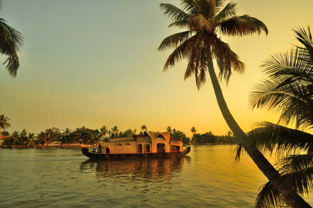
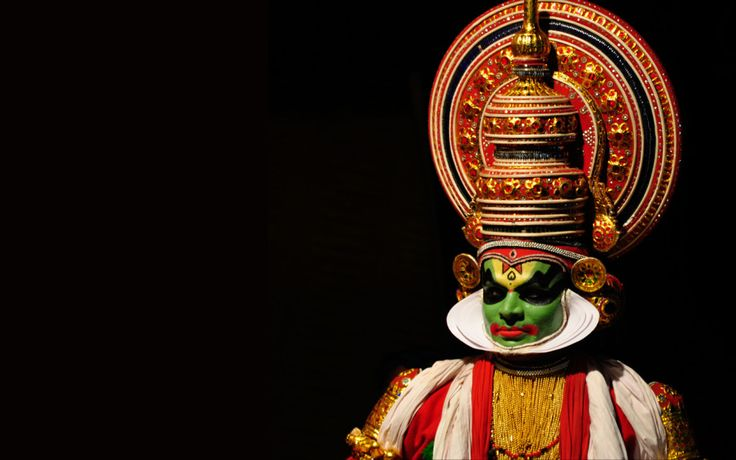

Back Water of Kerala
Some representative placeholder content for the first slide.

Hill Stations
Some representative placeholder content for the second slide.

Traditional Art
Some representative placeholder content for the third slide.